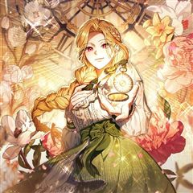

카카오웹툰 추천 인기 순위 TOP 30
카카오웹툰에서 지금 연재 중인 작품을 카카오웹툰 공식 인기 순위 순서로 모았어요. 네이버웹툰·카카오웹툰·레진코믹스에서 조건에 맞는 작품 944개 중 인기 순으로 30개를 골랐어요. 인기 TOP 3: SSS급 죽어야 사는 헌터, 지옥사원, 픽 미 업!
2026-10-09 기준 · 성인 작품 제외
내 취향으로 더 좁혀서 추천받기 →-
1
 카카오웹툰
카카오웹툰SSS급 죽어야 사는 헌터
F급 말단 헌터 ‘김공자‘. 랭킹 1위 ‘염제‘를 부러워하던 어느 날, 무려 S+급 스킬을 얻는다. 하지만 기쁨도 잠시, 어째 스킬 내용이 이상하다?! 상대의 스킬 중 1개를 복사한다,까지는 좋은데… "뭐? 내가 죽어야만 발동된다고?!" 죽어야 사는 헌터의 인간찬가 <SSS급 죽어야…
눈물샘자극학원물회귀카카오웹툰에서 보기 → -
2
 카카오웹툰
카카오웹툰지옥사원
인간의 음식에 매료된 악마 쿼터, 사고로 흙수저 인간에게 빙의하다?! 능력을 모두 잃고 인간 <고순무>의 몸에 갇힌 악마는, ‘낮은 등급’ 인간의 삶이 지옥에서의 삶보다 질이 떨어지자 ‘높은 등급’ 인간이 되기로 결심한다. 한 편, 국내 최고의 대기업 <선호 그룹>에선 학력과 경력을…
오피스카카오웹툰에서 보기 → -
3
 카카오웹툰
카카오웹툰픽 미 업!
그 누구도 던전의 끝까지 오르지 못한 극악의 난이도를 자랑하는 모바일 가챠 게임 <픽 미 업!(Pick me up!)> 마스터 오브 마스터라 불리는 세계 랭킹 5위의 마스터 '로키'는 던전을 깨던 중 정신을 잃게 된다. 깨어나 보니 레벨도 1, 등급도 1성인 <픽 미 업!> 속 영웅…
사이다액션게임판타지카카오웹툰에서 보기 → -
4
 카카오웹툰
카카오웹툰템빨
[신영우 (유저 네임: 그리드)] 세계 최고의 가상 현실 게임 <SATISFY>. 현실에서나, 게임 속에서나, 불운은 항상 그의 곁을 맴도는데.... 퀘스트 수행 중 우연히 발견한 게임 속 로또, '파그마의 기서'. 20억 명이 넘는 유저 중 유일한 최강의 레전드리 직업으로 전직. "…
사이다학원물게임판타지카카오웹툰에서 보기 → -
5
 카카오웹툰
카카오웹툰악어
19세의 나이, 살인을 저지르고 10년의 수형 생활을 마친 정인후. 출소 후 삶을 꿈꾸지만 현실을 쉽지않다. 그러던 어느 날, 과거 자신이 죽인 김상철의 아내 윤진희가 찾아와 아들 김루환의 경호를 제안한다.
자극적인액션느와르카카오웹툰에서 보기 → -
6
 카카오웹툰
카카오웹툰남궁세가 손녀딸의 귀환
혈마의 소교주 일화는 스승인 혈마의 뜻에 따라 남궁세가를 멸문시키지만, 혈마의 배신으로 인해 죽음을 앞두고 충격적인 이야기를 듣는다. “이제 천하에 남궁은 너 하나 남았다.” 일화는 자신이 남궁세가에서 오래전에 잃어버린 아이 ‘설화’였고, 간악한 혈마의 수작질을 위해 키워졌단 걸 알게…
로판회귀카카오웹툰에서 보기 → -
7
 카카오웹툰
카카오웹툰제가 어딘가 빙의를 한 것 같은데요
각박한 현실도 거지 같은데, 그 끝이 과로사라니! 이럴 거면 연애나 잔뜩 할걸 후회하기도 잠시, 어라.... 거울 속 당신은 누구신가요? 조금 당황스럽긴 하지만 이 몸... 엄청 예쁘잖아! 로맨스 판타지 소설에 빙의된 것 같은데 이왕 이렇게 된 거 탱자 탱자 놀며 로맨스나 즐겨볼까?…
개그로판로맨틱코미디카카오웹툰에서 보기 → -
8
 카카오웹툰
카카오웹툰백작가의 망나니가 되었다
눈을 떠보니 소설 속이었다. 그것도 망나니로 유명한 백작가의 도련님 몸으로…. 그리고, 소설 속에서 나를 박살 냈던 막강한 주인공 최한이 곧 여기로 온다.
미스터리빙의카카오웹툰에서 보기 → -
9
 카카오웹툰
카카오웹툰내가 죽은 뒤 꼬마 신랑은
8살이나 어린 꼬마 신랑과 정략결혼을 하게 된 리베냐. 불의의 사고로 죽었다. 눈을 떴더니 새로운 몸으로 빙의했다? 지긋지긋한 과거의 삶은 지우고, 새로운 삶으로 시작하려고 했는데... 우연히 만난 전남편의 상태가 이상하다? "단 한순간도... 널 잊은 적 없어." 10년이나 지났는데…
눈물샘자극설렘폭발로판빙의카카오웹툰에서 보기 → -
10
 카카오웹툰
카카오웹툰겨울성의 아기 죄수님
나라는 패망하고, 왕족들이 모두 처형되던 날 밤. 당연히 자신도 죽을 것이라 생각했던 클라리스는 뜻밖의 말을 듣게 된다. "열여덟이 되지 않은 자를 사형에 처할 수는 없다. 대신 네가 열여덟이 되는 날, 나는 너를 죽일 것이다." 그렇게 클라리스에게 주어진 십 년이라는 시간. 클라리스…
힐링로판성장물카카오웹툰에서 보기 → -
11
 카카오웹툰
카카오웹툰이번 생은 가주가 되겠습니다
“…한번 해 보자. 내가 가주가 되는 거야.” 제국에서 제일가는 가문, 롬바르디의 사생아로 환생한 피렌티아. 게다가 이 가문은 막대한 부는 물론 외교와 문화까지 통달한 말그대로 제국의 역사 자체! 금수저 오브 금수저 인생 당첨! 앞으로는 탄탄대로일 거라 생각했는데…. 아버지는 돌아가시…
사이다로판회귀카카오웹툰에서 보기 → -
12
 카카오웹툰
카카오웹툰남주가 제 건강에 집착합니다
엑스트라로 환생했다. 남주의 존재감 없는 소꿉친구, 소설 초반에 죽는 엑스트라. 시한부라 데드 플래그를 피할 수도 없어서 그러려니 살고 있는데……. “왜 안 건강해?” “건강하란 말이야.” “왜 또 아프고 그래? 허락받고 아프라고.” 남주가 내 건강 집착광공이 되었다. 아, 제발 남주…
힐링로판카카오웹툰에서 보기 → -
13
 카카오웹툰
카카오웹툰천하제일인의 소꿉친구
정파를 배신하고 천마 휘하의 마인이 되어 버린 구양천. 마인으로서 살아가며 천마의 명으로 본인의 의지와는 상관없이 수많은 악행을 저지르고 후회로 점철된 인생을 살아가게 된다. 천마가 일으킨 정마대전. 정파의 삼존 존재마저 무릎을 꿇린 천마를 베어낸 위설아로 인해 길고 길었던 지옥 같은…
액션하렘카카오웹툰에서 보기 → -
14
 카카오웹툰
카카오웹툰무한의 마법사
마굿간에 버려져 평민으로 키워진 아이, 시로네. 타고난 통찰력으로 글까지 깨우친 아이는 도시로 나간 어느 날 그토록 궁금해하던 마법을 경험한다. 그 길로 마법사를 꿈꾸게 된 시로네. 하지만 신분의 장벽이 두터운 이 곳은 아이에게 냉혹하고, 그는 채 어른이 되기도 전에 이 세상의 이면을…
미스터리학원물성장물카카오웹툰에서 보기 → -
15
 카카오웹툰
카카오웹툰검술명가 막내아들
진 룬칸델 대륙 최고의 검술명가, 룬칸델의 막내아들 룬칸델 역사상 최악의 둔재 비참하게 쫓겨나 허무한 최후를 맞이한 그에게 다시 한 번 기회가 주어졌다. “너는 이 힘을 어떻게 사용하고 싶더냐?” “저를 위해 사용하고 싶습니다.” 전생의 기억과 압도적인 재능, 그리고 신과의 계약 최강…
액션회귀카카오웹툰에서 보기 → -
16
 카카오웹툰
카카오웹툰천재 궁수의 스트리밍
선수권 대회 최연소 우승자. 그러나 비운의 사고로 몰락한 천재 양궁 선수 유상현! 먹고살기 위해 게임 스트리머, 아몬드가 되는데…. [활을 선택하셨습니다.] 피융! 푸욱! "…보스 원래 한 방이에요?" [엄마! 나는 커서 아몬드가 될래요!] [이게 조선의 활이다ㅋㅋㅋㅋ] 미친 재능이…
서스펜스학원물카카오웹툰에서 보기 → -
17
 카카오웹툰
카카오웹툰그 쓰레기가 나였어요
역하렘 연애 육성 게임에 빙의했다. 온갖 악행을 저지르다 처단당하는 악녀, F-등급의 튤리아 프레지어로. “이렇게 끔찍한 스탯으로 살아남는 게 가능해?” “이 건방진 말투는 뭐야?!” 돈도 없고 운도 없고 모두에게 미움받으며, 아무도 날 사랑하지 않는다지만… 목숨을 부지하기 위해서 모…
사이다설렘폭발로판빙의카카오웹툰에서 보기 → -
18
 카카오웹툰
카카오웹툰괴담에 떨어져도 출근을 해야 하는구나
[ ⚠️ 해당 작품에는 공포 연출 및 폭력적·잔혹한 장면이 포함되어 있습니다. 이용에 참고 부탁드립니다. ] 소중한 연차까지 내고 갈 정도로 좋아하던 '어떤 현대판타지' 팝업 이벤트. 그리고 그날, 그 현판 속으로 빙의당했다. 무려 유명 대기업에 막 취직한 신입사원으로! 복지 좋고 연…
미스터리카카오웹툰에서 보기 → -
19
 카카오웹툰
카카오웹툰관존 이강진
미친놈인가? 아니면 흔한 관심종자인가? 사람의 다름을 이해 못 하는 제자 이강진. 그리고 그걸 이해시켜주고자 하는 스승 곽노. 두 사제師弟의 따뜻한 휴먼스토리.
액션성장물카카오웹툰에서 보기 → -
20
 카카오웹툰
카카오웹툰네크로맨서 학교의 소환천재
네크로맨서 진영과 프리스트 진영의 '100년 전쟁' 이후. 힘의 구도를 뒤바꿀 역대급 인재가 태어났다. 무엇을 상상하던 그 이상의 잠재력. 아버지의 언데드 군단을 손에 넣고, 대륙을 양분하는 위대한 네크로맨서 학교 '키젠'에 입학한다. 엘리트들 사이에 있어도 천재는 천재. 새로운 케이…
학원물성장물카카오웹툰에서 보기 → -
21

카카오웹툰시간치료사 세레스
시간을 돌리는 신비한 능력으로 성녀이자 악마라 불리었던 엘르시아 백작가의 가주 그레이스. 세상에 존재하는 수많은 이들을 살렸으나, 자신의 병은 고칠 수 없었다. ‘피곤해, 그만 쉬고 싶어.’ 그렇게 세상을 떠나 이제야 평온해지나 싶던 찰나…. '여긴 어디지?’‘내가 죽은 지 300년이…
사이다로판로맨틱코미디카카오웹툰에서 보기 → -
22
 카카오웹툰
카카오웹툰무당기협
무림 사파의 수장인 혁련무강은 죽기 직전 불로초를 삼킨 후 눈을 떠보니 무당파 도동의 몸에 빙의되었다. 예전에 본인이 붕괴 직전까지 몰고 갔던 무당파에서 '진무'라는 이름의 도사로 다시 살게 된 그는 무당의 '양의신공'을 전수받기 위해 애쓰다 보니 뜻하지 않게 무당이 부흥하는데...!
사이다액션빙의카카오웹툰에서 보기 → -
23
 카카오웹툰
카카오웹툰흑백무제
전란의 불이 타오를 때면 그 날이 떠오른다. 나의 가문, 벽산연가가 멸문하던 그 날이... 온몸을 꿰뚫린 아버지 비명횡사한 동생, 지평. 평생을 걸쳐 원수를 찾았지만 알 수 없었다. 누가. 그리고 왜. 살아났다. 그리고 돌아왔다. 벽산연가에. 그 말은 혈육을 도륙낸 원수를 다시금 찾을…
사이다액션회귀카카오웹툰에서 보기 → -
24
 카카오웹툰
카카오웹툰데뷔 못 하면 죽는 병 걸림
4년 차 공시생, 낯선 몸에 빙의해 3년 전으로 돌아왔다. 그리고 그의 눈앞에 나타난 갑작스러운 상태창의 압박! [돌발!] [상태이상: '데뷔가 아니면 죽음을!' 발생!] 돌연사 위협 때문에 팔자에도 없던 아이돌에 도전하게 된 주인공의 대환장 일지. ※특이사항: 빙의 전 아이돌 데이터…
설렘폭발빙의카카오웹툰에서 보기 → -
25
 카카오웹툰
카카오웹툰유부녀 킬러
육아휴직을 마치고 회사로 돌아간 5년차 유부녀 유보나. 보나는 저격총을 쥔 채 호텔에 있는 타깃을 향해 총구를 겨눈다. "탕!" 복귀 후 첫 미팅은 암살업무, 보나는 유부녀 ‘킬러’이다. 보나는 자신의 딸 율이와 시어머니가 운영하는 치킨집을 찾았는데, 테이블 뒤편에서 고아인 보나를 험…
카카오웹툰에서 보기 → -
26
 카카오웹툰
카카오웹툰가드패스
평소 먹는 것을 좋아해 뚱뚱하고 큰 체격을 가진 '임세준'. 그는 뚱보라는 놀림에도 신경 쓰지 않는 자존감이 높고 확고한 성격을 가졌다. 그에게 단 한 명의 친구 '서하진'. 그녀는 어릴 적부터 세준을 지켜주기 위해 늘 운동을 배워왔다. 어느 날 세준은 같은 반 일진과 트러블이 생기고…
사이다학원물배틀카카오웹툰에서 보기 → -
27
 카카오웹툰
카카오웹툰재앙급 영웅님이 귀환하셨다
지상에 최강의 영웅이 있었다. “하지만 죽었잖아. 우리가 죽인 놈이 어떻게 돌아와?” “그러게. 돌아올 수 있으면 한번 돌아와 보라지.” 그런데 20년 만에 진짜 돌아와 버렸다? “뭘 그리 놀래? 왜. 양심에 찔릴 짓이라도 하셨나?” 이 XX들. 가만 안 둔다.
사이다학원물복수극카카오웹툰에서 보기 → -
28
 카카오웹툰
카카오웹툰엄마가 계약결혼 했다
리리카는 술주정뱅이 어머니를 모시고 하루하루 먹고 사는 빈민가의 소녀다. 그러던 어느날...... “꺄악, 뜨거워! 싫어!” 어머니가 비명을 지르며 잠에서 깨어나더니, “리리,살아있구나, 어려졌니?” 엉뚱한 소리를 하시고 “오늘이 며칠이지?” 정신을 못 차리시더니 “이럴수가, 돌아왔어…
힐링로판육아물카카오웹툰에서 보기 → -
29
 카카오웹툰
카카오웹툰먼치킨 스킬 도둑이 되었다
도둑질이나 하는 스킬인 줄 알았다. 평생 반푼이라 멸시받고, 동료들에게마저 배신당해 죽음을 눈앞에 둔 순간, 스킬도 도둑질 되는걸 알았다. 그래서 "회귀"부터 훔쳤다. 단 한 번의 회귀로 과거로 돌아온 크라슈. 회귀 스킬은 이미 사라졌지만, 미래의 기억은 고스란히 남아 있다. 이번에야…
사이다성장물회귀카카오웹툰에서 보기 → -
30
 카카오웹툰
카카오웹툰이 집안을 일으켜세우겠습니다!
키 183, 몸무게 75 3대 500을 치던 완벽한 내 몸은 어디 가고 이딴 짜리몽땅 삼등신이 되다니! 세계적인 기업이자 삼전 그룹의 왕이었던 나, 전성국. 갑작스러운 심장 마비로 죽어버렸다. 생애 최고의 날에 쓰러진 것도 모자라 가난한 집구석의 아기가 되어버렸다고!!! 게다가 집은…
사이다성장물카카오웹툰에서 보기 →